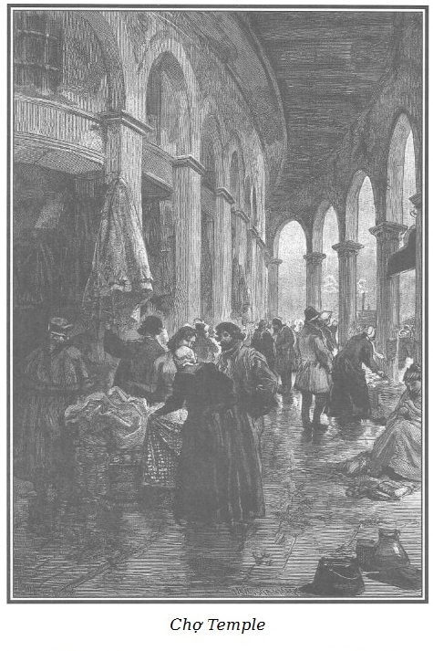

Dù không bằng lòng lắm với cách tán dương hơi quá của Rigolette đối với cảnh chợ Temple, Rodolphe vẫn không khỏi sững sờ bởi dáng vẻ độc đáo của cái chợ khổng lồ với các phường và lối đi trong chợ.
Ở khoảng giữa phố Temple, không xa một công trình đài-giếng-phun* ở góc quảng trường lớn, có một nhà khối hình bình hành rộng mênh mông với nhiều cột kèo, sườn mái lợp đá phiến.
Fontaine: một kiểu giếng phun có vòi nước tự chảy suốt ngày để cung cấp nước uống.
Đó là chợ Temple.

.Bên trái là phố Petit-Thouars và bên phải là phố Percée làm giới hạn, phía cuối là một ngôi nhà tròn rộng bao la, nói đúng hơn là một cái đình tròn khổng lồ, xung quanh có hành lang vòm cuốn.
Một lối đi dài cắt ngang ở giữa, chia ra hai phần bằng nhau, mỗi phần lại phân nhỏ ra, chia nhỏ thêm nữa, thêm mãi thành vô vàn những lối đi ngang dọc cắt nhau theo mọi hướng và có nóc nhà che mưa, che gió.
Trong cái chợ đó, mọi mặt hàng còn mới tinh, nói chung thường là bị cấm nhưng một mẩu vải quèn, một mảnh sắt vụn, tí đồng, tí thép mỏng nhất vẫn có kẻ bán, người mua.
Có những cửa hàng chứa hàng núi giày cũ vẹt gót mòn đế, rách, thủng, cứng queo, nứt rạn, không biết gọi là gì, không có hình dạng, màu sắc rõ rệt, đây đó lẫn lộn vài cái đế giày cổ lỗ sĩ gần như hóa thạch, dày bằng đốt ngón tay cái, đinh đóng chi chít như cửa nhà lao, cứng chẳng khác gì móng ngựa: chính thị là “các bộ gọng xương giày” mà mỗi phần đều đã bị thời gian gặm mòn gần hết. Mọi thứ đều mốc meo, nham nhở, thủng lỗ chỗ, khô đét, thế mà vẫn có người mua, có những thương gia sống nhờ vào nghề mua bán loại hàng ấy…
Xa hơn, dưới biển hiệu “thời trang”, dưới vòm mái đình cao vút, đầu lối đi chính, phân đôi chợ Temple thành hai phần, treo vô vàn quần áo đủ màu sắc như những bùa tua bùa túi, kiểu cách dáng vẻ còn quá đáng hơn những cái mũ đàn bà cũ.
Nhiều áo redingote trước kia vốn màu xanh chai do dùng lâu ngày mà nay đã thành màu xanh lục bợt hồng, có viền chỉ thêu đen được tân trang thêm bằng cách thay lớp vải lót ca-rô xanh vàng tươi mát.
Những áo lễ kiểu đuôi tôm, màu gỗ amadou, cổ tuyết nhung sang trọng đơm khuy mạ bạc đã bợt, lộ ra cốt khuy đồng đỏ hỏn…
Những cuộc trưng bày giày cũ, quần áo cũ lố lăng làm nên khía cạnh lố bịch của cái chợ ấy. Đó là khu vực của loại quần áo “rởm”, quần áo ba vạ khéo sửa sang, khéo hồ, đánh lộn sòng một cách rất ngông, nhưng cũng phải thừa nhận hay đúng hơn là phải biểu dương cái doanh nghiệp đồ sộ có ích cho tầng lớp người nghèo hoặc không khá giả cho lắm. Ở đấy họ mua được hàng giảm giá rất nhiều, mua được những của tốt gần như còn mới mà sự mất phẩm chất có thể nói chỉ là tượng trưng.
Một phía của chợ Temple, dành cho hàng chăn đệm, bày hàng đống chăn, khăn trải giường, đệm gối, xa hơn là thảm, màn ri đô, đồ dùng trong nhà đủ loại, chỗ khác nữa là quần áo, giày dép, khăn mũ cho đủ hạng người, mọi lứa tuổi. Những thứ ấy thường sạch sẽ cực kỳ, trông không có gì là nghịch mắt.
Trước khi thăm chợ, người ta không thể tin được là không mất nhiều thì giờ và tiền bạc mà vẫn có thể mua được đầy một xe ba gác tất cả mọi thứ cần thiết cho vài ba gia đình hiện đang trống trơn thiếu thốn có đủ phương tiện để sinh hoạt đàng hoàng.
Rodolphe rất ngạc nhiên trước lời mời chào, chèo kéo khách hàng, ân cần, vồn vã và vui vẻ của những người bán hàng đứng trước cửa hiệu của họ. Cách chào khách hàng vừa thân mật vừa lễ độ ấy dường như thuộc vào một thời đại nào khác!
Rodolphe đưa tay cho Rigolette vịn. Vừa đi vào lối chính, nơi dọn hàng chăn đệm, ông đã được chào mời rối rít.
- Ông khách ơi! Mời ông vào xem những cái đệm tôi bán này! Cứ như mới nhé! Tháo đường chỉ ở một góc ông xem nhé, xem phía trong nhồi thế nào, có thể coi là len lông cừu đấy! Rõ êm và trắng nhé!
- Bà chị nhỏ nhắn xinh đẹp ơi, có khăn trải giường đây này! Bằng vải bông loại tốt đấy, còn hơn khăn mới kia vì đã mịn mặt rồi. Xem này, rõ là mát tay và bền lắm đấy!
- Cô cậu mới cưới ơi! Vào cửa hàng tôi xem mấy cái chăn này đi. Đấy, thấy không, vừa êm vừa ấm, lại nhẹ nữa, khác gì chăn bông vịt Bắc Hải, vừa làm mới lại đây, chưa đắp quá hai mươi lần đâu. Nào, cô dâu xinh đẹp ơi, bảo cậu ấy quyết định đi, mua hàng tôi, tôi tính rẻ mà. Cô cậu sẽ được hài lòng mà nhớ lần sau lại đến cửa hàng mẹ Bouvard này! Hàng gì cũng có, muốn thứ gì cũng sẵn. Hôm qua, tôi mới mua được một món rõ hời, rõ đẹp kia. Mời cô cậu vào xem! Vào mà xem đi, có mất gì đâu!
- Thật đấy, bạn hàng xóm ạ! - Rodolphe bảo với Rigolette. - Tôi ưa cái cửa hàng của bà béo này hơn cả đấy. Bà ấy bảo chúng ta là vợ chồng mới cưới, làm tôi khoái lắm. Ta phải vào mua hàng của bà ấy thôi!
- Ờ, vào được đấy! - Rigolette gật đầu - trông bà ta em cũng ưng. - Cô thợ hay làm đỏm và người bạn cùng đi vào hàng mẹ Bouvard.
Do cách đối xử người lớn hiếm thấy ở nơi khác, ngoài chợ Temple ra, các bà hàng khác đã không mếch lòng vì bà này tranh được khách, có bà bên cạnh còn nói:
- Mẹ Bouvard vớ được món khách bở này còn hơn để người khác vớ mất, nhà bà ấy đông miệng ăn và lại là người kỳ cựu có tiếng tăm ở chợ Temple này đấy. Vả chăng mấy ai có được bộ mặt xởi lởi dễ coi, tươi cười như bà bán hàng kỳ cựu của chợ này.
- Này tiểu thư xinh đẹp ơi, - bà bảo với Rigolette, cô này thì đang xem hàng với con mắt sành sỏi - đây là món hàng xách tay mới mua được mà tôi vừa nói đấy: hai bộ chăn đệm đầy đủ, gần như còn mới nguyên! Nếu cô thích mua một cái tủ bàn giấy nhỏ, cũ, không hết mấy tiền, thì đây này! - Mẹ Bouvard đưa tay chỉ. - Mua cùng với cái lô ấy đấy! Thường thì tôi không hay buôn đồ gỗ, nhưng lần này thì tôi không nỡ từ chối. Người bán các thứ hàng này cho tôi trông có vẻ thiểu não quá đi mất! Khổ thân bà ta, phải bán đi cái đồ cổ này, dường như bà ta đứt từng khúc ruột, có lẽ là của cha ông để lại.
Nghe thấy vậy, trong khi bà bán hàng và Rigolette cò kè mặc cả với nhau về mấy món hàng, Rodolphe ngắm kĩ thứ đồ gỗ mà mẹ Bouvard đã chỉ cho ông.
Đó là một loại tủ bàn giấy kiểu cổ đã cũ bằng gỗ trắc, hình dạng gần giống tam giác, khép phía trước bằng mặt ván, nếu sập xuống và đỡ bên dưới bằng hai bản lề đồng thì trở thành bàn viết, phía giữa mặt ván có hình ghép gỗ tô điểm nhiều màu khác nhau. Rodolphe để ý thấy một dấu hiệu tên người, khảm trên gỗ mun gồm hai chữ M và R lồng vào nhau trên có mũ miện Bá tước. Ông đồ rằng người chủ cũ của cái tủ ấy ắt thuộc giới thượng lưu. Càng thêm hiếu kỳ gấp bội, ông quan sát kĩ lưỡng hơn, xem xét các ô ngăn kéo, hết ô này đến ô khác, thì bỗng thấy hơi khó mở ở ngăn cuối cùng. Tìm xem vì nguyên nhân gì thì ông phát hiện và thận trọng rút từ tủ ra một tờ giấy mắc kẹt giữa ô kéo và đáy tủ.
Trong khi Rigolette ngã giá mua bán với mẹ Bouvard thì Rodolphe chăm chú kiểm tra vật mới phát hiện.
Qua nhiều chỗ tẩy xóa lem nhem, thấy rõ đây là bản thảo của một lá thư viết dở.
Rodolphe phải vất vả lắm mới đọc nổi những dòng sau đây:
“Thưa ngài,
Mong ngài hãy tin là, chỉ vì nỗi bất hạnh mà cực chẳng đã tôi phải nhờ vả ngài, cũng chẳng phải do tự ái vặt mà tôi đắn đo. Chính là do thiếu hẳn những chứng thư của thứ công việc mà tôi phải nhờ đến ngài…
Sau khi ông nhà tôi mất đi, gia tài chỉ còn vẻn vẹn ba trăm nghìn franc. Ở Angers, nơi mẹ con tôi lui về cư ngụ, tôi nhận lợi tức của món tiền ấy qua trung gian của cậu cháu. Thưa ngài, ngài đã biết cái biến cố khủng khiếp làm cậu cháu mất mạng. Dường như bị sạt nghiệp bởi những vụ đầu cơ kín đáo và đen đủi, cách đây tám tháng, cậu cháu đã tự vẫn. Trước ngày xảy ra sự kiện bi thảm đó, tôi nhận được vài hàng chữ tuyệt vọng của cậu cháu. Cuối lá thư, cậu ấy bảo là không có bất kỳ một chứng khoán nào của món tiền đứng tên tôi ở chỗ Jacques Ferrand. Ông này không bao giờ cấp giấy chứng nhận tiền với lý do ông ta là hiện thân của danh dự, của sự sùng đạo, tôi chỉ cần tới gặp là mọi việc sẽ được giải quyết chu đáo ngay thôi. Khi đã nguôi ngoai sau cái chết của cậu cháu, tôi lên Paris. Ở đấy tôi không quen biết ai, ngoài ngài ra, lại còn là gián tiếp do những quan hệ trước đây giữa ngài và chồng tôi. Như đã thưa với ngài, món tiền gửi ở nhà Jacques Ferrand là tất cả tài sản của tôi. Cứ mỗi sáu tháng thì cậu cháu lại gửi lợi tức số tiền ấy cho tôi, kể từ kỳ hạn cuối cùng. Đến nay một năm đã trôi qua, tôi bèn đến nhà Jacques Ferrand để lấy tiền lãi vì đang khẩn tiền. Vừa nghe tôi xưng tên, đã không tôn trọng nỗi đau khổ của tôi thì chớ, ông ta còn đổ lỗi cho cậu cháu chết đi đã cướp không hai trăm franc vay của ông ta, lại đay thêm rằng vụ tự tử ấy chẳng những là một tội ác trước Chúa và mọi người, mà còn là hành động chiếm đoạt tài sản của ông ta nữa.
Tôi bèn bảo với ông chưởng khế Jacques Ferrand là tôi đồng ý để cho ông ta được khấu ngay số tiền hai trăm franc vào số tiền ba trăm nghìn franc ông ta hiện đang giữ.
Ông chưởng khế nhún vai, cười tủm ra vẻ thương hại, làm như những lời tôi nói là thiếu nghiêm chỉnh và còn bảo là cậu cháu chưa hề có ý định gửi tiền cho ông ta bao giờ, đã thế còn vay tiền ông ta…
Không biết nói thế nào với ngài để ngài hiểu hết nỗi lo sợ của tôi khi nghe câu trả lời như vậy.
Tôi chết cay chết đắng mà ra khỏi nhà lão chưởng khế. Đến nông nỗi này thì còn biết làm gì được nữa. Chẳng có giấy tờ, chứng khoán gì sất để chứng tỏ số tiền đã được ký gửi thực sự. Tôi một mực tin tưởng sắt đá vào lòng trung thực của cậu cháu, mặt khác thì tôi lại rối bời trước sự tự tin của ông Ferrand, không còn biết ai khác để xin ý kiến ngoài ngài ra (lúc bấy giờ ngài đang đi vắng). Biết rằng việc cần phải hỏi ý kiến các luật gia tài sản và có còn lại ít nhiều thì cũng phải giữ lấy, tôi không dám lao vào một vụ kiện, thế là…
Bản thảo lá thư ngừng ở đấy, vì nhiều dòng chữ cuối bị xóa không thể nào luận ra được. Cuối cùng, ở tận phía dưới trang, trong một góc, Rodolphe đọc thấy một dòng như thể nhắc cho nhớ: “Viết cho bà Công tước de Lucenay.”
Rodolphe suy nghĩ một lúc lâu, sau khi đọc được mẩu thư ấy…
Dù có ai đó muốn tố giác lão Jacques Ferrand thêm một tội ô nhục nữa, tuy chưa có đủ căn cứ, nhưng loại người như lão quá nhẫn tâm đối với bác Morel tội nghiệp, quá đê mạt đối với Louise con bác, thì cái việc lật mặt chối phăng không nhận để cướp không tiền nong người ta ký gửi, sự phủ nhận được bảo đảm chắc chắn là không bị trừng phạt, chẳng có gì lạ ở một tên khốn nạn như thế.
Người mẹ đi đòi cái gia tài bị mất sạch một cách kỳ lạ như vậy hẳn trước kia đã quen sống sung túc. Bị phá sản vì một tai họa quá bất ngờ, chẳng quen biết ai ở Paris như trong bức thư nháp đã nói, bơ vơ giữa thành phố bao la này, gần như hoàn toàn khánh kiệt, cuộc sống của mẹ con nhà ấy cực khổ biết nhường nào?
Chúng ta biết là Rodolphe đã hứa với phu nhân d’Harville một vài việc hay hay, dù là tình cờ đi nữa; rằng ông sẽ tìm giao cho nàng chủ trì vài việc công đức nào đó để chú tâm vào mà khuây khỏa nỗi lòng. Vả chăng ông cũng chắc chắn là trước lần gặp gỡ sắp tới với nữ Hầu tước, kiểu gì chẳng có một nỗi bất hạnh lớn để cho nàng đỡ đần an ủi.
Đúng là có một sự ngẫu nhiên nào đó đã run rủi cho ông phát hiện được một nỗi bất hạnh cao quý như đã dự kiến, xứng đáng làm cho phu nhân d’Harville vốn giàu tưởng tượng và nhân từ quan tâm.
Bản nháp lá thư trong tay ông, mà hẳn là bản chính khẩn khoản cầu mong giúp đỡ không được gửi đi, khí khái và nhẫn nhục, chắc chắn người viết lá thư sẽ giãy nảy lên trước lời ngỏ ý ban ơn. Như thế thì phải ý tứ, phải mẹo mực, phải khéo léo tế nhị biết bao để người ta không thể biết hành động hào hiệp đến từ đâu hoặc là để mà người ta chịu nhận cho.
Biết mấy là nơi phải đến để tiếp xúc với người phụ nữ ấy xem họ có xứng đáng ái ngại như ta nghĩ không? Phu nhân d’Harville tất sẽ được “giải khuây” bởi rất nhiều cảm xúc mới mẻ, lý thú, làm mủi lòng, như ông Rodolphe đã hứa với nàng.
Rigolette nhí nhảnh bảo Rodolphe:
- Thế nào, ông “chồng” của em, ông đọc cái gì trong mảnh giấy lộn ấy vậy?
- Cô vợ bé nhỏ của tôi ạ, sao cô tò mò thế! Sẽ nói cho cô biết sau! Thế nào, mua bán xong rồi chứ?
- Tất nhiên, những người ông che chở sẽ được trang bị đầy đủ như ông hoàng bà chúa! Chỉ còn việc trả tiền. Phải công nhận là bà Bouvard dễ tính thật!
- Cô vợ bé nhỏ của tôi ơi! Có ý kiến nhé! Trong khi tôi trả tiền ở đây, thì cô đi chọn mua quần áo cho bà Morel và mấy đứa trẻ chứ? Tôi thú thật là mù tịt về những việc này. Bảo cho mang lại đây. Ta chỉ tốn công đi một lượt là những người nghèo ấy sẽ có đủ các thứ cùng lúc.
- Ông nói lúc nào cũng đúng, chồng của em ạ! Đợi em một lát nhé, không lâu la gì đâu! Em vốn là khách hàng quen của hai cửa hàng, xưa nay vẫn thường đi lại mua bán ở đấy, muốn tìm những thứ gì cần đều có cả.
Thế là Rigolette đi ra.
Nhưng cô còn quay lại.
- Bà Bouvard ơi, em gửi “nhà em” cho bà đấy, bà chớ chọc ông ấy đấy nhé!
Nói rồi cô phá lên cười và vụt đi ra.